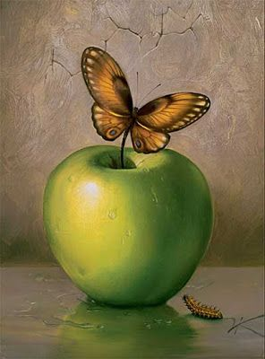
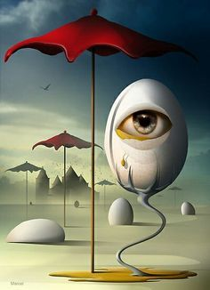
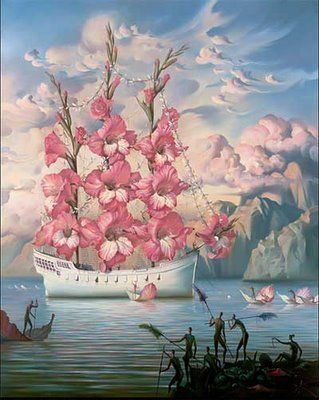
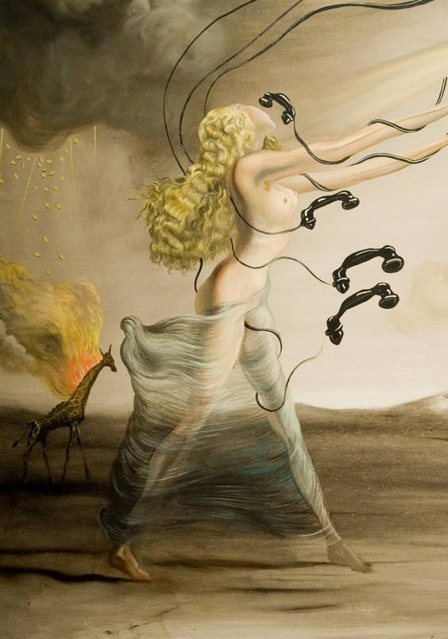
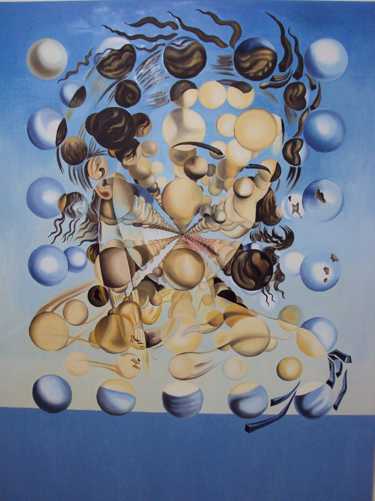
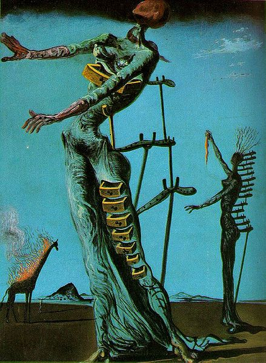
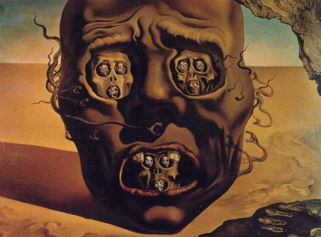

Dalijevim djelima
https://www.wikiart.org/en/salvador-dali/all-works
Njegovom životu
http://thedali.org/timeline/
Dalijevi citati
https://www.goodreads.com/author/quotes/165858.Salvador_Dal_

Zanimljivo je da je, osim slonova i satova, jaje jedan od čestih Dalijevih motiva. On jaje povezuje s nečim očinskim i interauternim, a koristi ga kako bi simbolizovao nadu i ljubav.
Dali o slikarstvu govori kao o magiji. Suprotno od većine umjetnika XX vijeka ima potrebu da se opravdava pred savremenicima. Njegov stav prema savremenim slikarima je taj što im zamjera da su zaboravili tehniku starih majstora
Rođen je 11. maja 1904. godine, a umro 23. januara 1989.